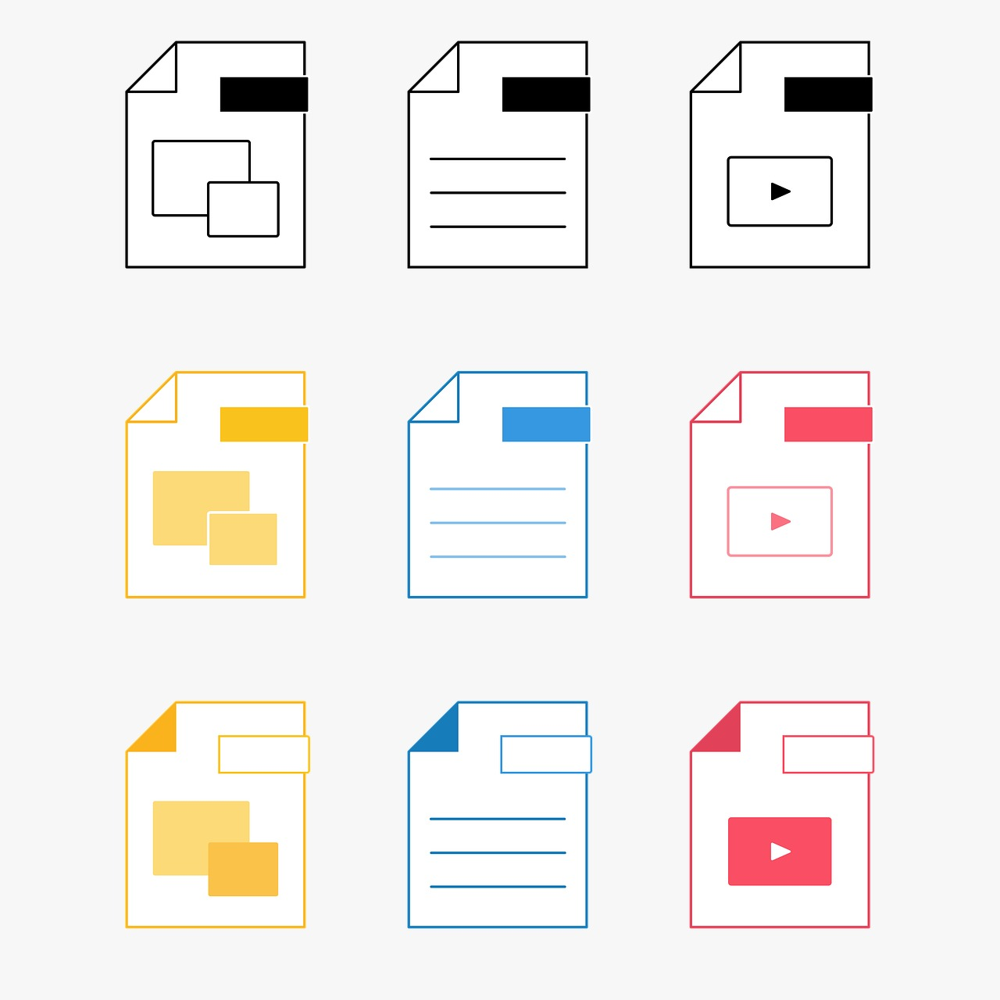

- Compresión con pérdida. Esta técnica reduce el tamaño del archivo eliminando información que no es esencial, lo que puede afectar la calidad de los datos. Ejemplos comunes incluyen los formatos JPEG para imágenes y MP3 para audio.
- Compresión sin pérdida. La compresión sin pérdida reduce el tamaño del archivo sin perder ninguna información. Esto es crucial para aplicaciones donde la calidad es fundamental, como en el formato PNG para imágenes y ZIP para archivos.
- Algoritmos de compresión. Diversos algoritmos son utilizados para compresión, como el algoritmo de Huffman, LZW (Lempel-Ziv-Welch), y el método de codificación Run-Length. Cada uno tiene sus aplicaciones específicas dependiendo del tipo de datos.
- Compresión en video. En la compresión de video, se utilizan técnicas como la compresión intracuadro y la compresión intercuadro para reducir el tamaño del archivo sin sacrificar demasiado la calidad del video. Los formatos como H.264 y HEVC son ejemplos de codecs de video.
- Aplicaciones de la compresión. La compresión es utilizada ampliamente en almacenamiento de datos, transmisión de medios y optimización de redes. Permite un uso más eficiente del ancho de banda y espacio en disco, mejorando la accesibilidad y velocidad de los contenidos.